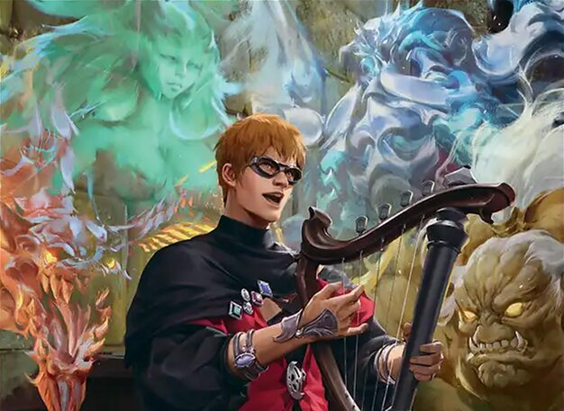

Welche Commander gewinnen mit deinem Budget am häufigsten?
64 beliebte Commander, je Preisklasse (100 €, 200 €, 300 €, 400 € und 500 €) mit einem Budget-Deck gebaut und laufend in Forge gegeneinander getestet. Zu jedem Deck: Kartenliste, Statistik aus den Partien und Kaufliste für Cardmarket.
- 18.935 Partien
- 120 Turniere
- 320 getestete Decks
Letztes Turnier: . Nach jedem Turnier wird die Seite automatisch aktualisiert.
Rangliste
Die erfolgreichsten Decks bis 100 € in der Forge-Simulation (Bracket 3: höchstens 3 Game Changer).
 Illustration: Eric Deschamps · © Wizards of the Coast
Illustration: Eric Deschamps · © Wizards of the CoastOloro, Ageless Ascetic
 Illustration: Kai Carpenter · © Wizards of the Coast
Illustration: Kai Carpenter · © Wizards of the CoastGiada, Font of Hope
 Illustration: Joshua Raphael · © Wizards of the Coast
Illustration: Joshua Raphael · © Wizards of the CoastKuja, Genome Sorcerer
Rangliste bis 100 €
aus 35 Turnieren| # | Commander | Elo | Siegquote | Partien | Preis | Status |
|---|---|---|---|---|---|---|
| 1 | | 1823 | 60 % | 350 (4) | 99,82 € | Über dem Schnitt |
| 2 | | 1735 | 48 % | 351 (12) | 99,53 € | Über dem Schnitt |
| 3 | Kuja, Genome Sorcerer // Trance Kuja, Fate Defied Siegquote 47 % · 350 (1) Partien · 99,28 € Über dem Schnitt | 1721 | 47 % | 350 (1) | 99,28 € | Über dem Schnitt |
| 4 |  | 1718 | 46 % | 351 (2) | 99,81 € | Über dem Schnitt |
| 5 |  | 1706 | 44 % | 350 (2) | 100,00 € | Über dem Schnitt |
| 6 |  | 1686 | 42 % | 351 (9) | 99,90 € | Über dem Schnitt |
| 7 |  | 1675 | 40 % | 352 (4) | 99,58 € | Über dem Schnitt |
| 8 |  | 1674 | 40 % | 351 (6) | 94,06 € | Über dem Schnitt |
| 9 |  Sephiroth, Fabled SOLDIER // Sephiroth, One-Winged Angel Siegquote 40 % · 350 (9) Partien · 99,95 € Über dem Schnitt | 1674 | 40 % | 350 (9) | 99,95 € | Über dem Schnitt |
| 10 |  | 1659 | 38 % | 351 (3) | 100,00 € | Über dem Schnitt |
| 11 |  | 1644 | 38 % | 351 (13) | 99,12 € | Über dem Schnitt |
| 12 |  | 1636 | 36 % | 351 (13) | 99,94 € | Über dem Schnitt |
| 13 |  | 1626 | 35 % | 352 (11) | 99,25 € | Über dem Schnitt |
| 14 |  | 1623 | 35 % | 351 (10) | 99,62 € | Über dem Schnitt |
| 15 |  | 1594 | 31 % | 350 (15) | 98,66 € | Über dem Schnitt |
| 16 |  | 1584 | 31 % | 350 (9) | 98,20 € | Über dem Schnitt |
| 17 |  | 1581 | 29 % | 350 (23) | 98,38 € | Noch offen |
| 18 |  | 1577 | 29 % | 351 (16) | 99,36 € | Noch offen |
| 19 |  | 1573 | 29 % | 350 (14) | 99,36 € | Noch offen |
| 20 |  | 1570 | 31 % | 121 | 98,38 € | Noch offen |
| 21 |  | 1567 | 30 % | 352 (6) | 99,67 € | Über dem Schnitt |
| 22 |  | 1558 | 27 % | 350 (42) | 99,86 € | Noch offen |
| 23 |  | 1553 | 28 % | 350 (17) | 99,87 € | Noch offen |
| 24 |  | 1545 | 27 % | 351 (9) | 99,85 € | Noch offen |
| 25 |  | 1542 | 28 % | 351 (25) | 99,92 € | Noch offen |
| 26 |  | 1540 | 27 % | 352 (13) | 99,74 € | Noch offen |
| 27 |  | 1529 | 27 % | 351 (10) | 99,63 € | Noch offen |
| 28 |  | 1528 | 26 % | 350 (16) | 99,98 € | Noch offen |
| 29 |  | 1521 | 26 % | 351 (15) | 98,65 € | Noch offen |
| 30 |  | 1516 | 24 % | 351 (11) | 99,96 € | Noch offen |
| 31 |  | 1513 | 24 % | 351 (5) | 99,65 € | Noch offen |
| 32 |  | 1506 | 24 % | 350 (18) | 99,85 € | Noch offen |
| 33 |  | 1492 | 23 % | 350 (16) | 99,64 € | Noch offen |
| 34 |  | 1482 | 21 % | 350 (15) | 99,62 € | Noch offen |
| 35 |  | 1481 | 21 % | 352 (9) | 98,97 € | Noch offen |
| 36 |  | 1479 | 21 % | 350 (15) | 99,80 € | Noch offen |
| 37 |  | 1477 | 21 % | 352 (24) | 97,67 € | Noch offen |
| 38 |  | 1468 | 20 % | 352 (17) | 98,63 € | Unter dem Schnitt |
| 39 |  | 1465 | 20 % | 352 (13) | 98,64 € | Unter dem Schnitt |
| 40 |  | 1461 | 19 % | 351 (12) | 99,75 € | Unter dem Schnitt |
| 41 |  | 1459 | 19 % | 350 (23) | 99,83 € | Unter dem Schnitt |
| 42 |  | 1437 | 19 % | 350 (13) | 99,96 € | Unter dem Schnitt |
| 43 |  | 1435 | 17 % | 351 (15) | 99,55 € | Unter dem Schnitt |
| 44 |  | 1430 | 18 % | 350 (34) | 99,46 € | Unter dem Schnitt |
| 45 |  | 1430 | 17 % | 350 (42) | 99,99 € | Unter dem Schnitt |
| 46 |  | 1427 | 17 % | 351 (26) | 99,77 € | Unter dem Schnitt |
| 47 |  | 1426 | 17 % | 351 (25) | 99,96 € | Unter dem Schnitt |
| 48 |  | 1425 | 17 % | 30 | 99,73 € | Noch offen |
| 49 |  | 1420 | 17 % | 351 (25) | 99,60 € | Unter dem Schnitt |
| 50 |  | 1414 | 16 % | 350 (14) | 99,94 € | Unter dem Schnitt |
| 51 |  | 1400 | 15 % | 350 (18) | 100,00 € | Unter dem Schnitt |
| 52 |  | 1393 | 15 % | 351 (13) | 99,30 € | Unter dem Schnitt |
| 53 |  | 1391 | 16 % | 350 (32) | 99,70 € | Unter dem Schnitt |
| 54 |  | 1358 | 13 % | 352 (23) | 99,37 € | Unter dem Schnitt |
| 55 |  Esika, God of the Tree // The Prismatic Bridge Siegquote 12 % · 350 (21) Partien · 99,92 € Unter dem Schnitt | 1352 | 12 % | 350 (21) | 99,92 € | Unter dem Schnitt |
| 56 |  Frodo, Adventurous Hobbit // Sam, Loyal Attendant Siegquote 12 % · 351 (33) Partien · 98,36 € Unter dem Schnitt | 1350 | 12 % | 351 (33) | 98,36 € | Unter dem Schnitt |
| 57 |  | 1329 | 11 % | 351 (13) | 99,50 € | Unter dem Schnitt |
| 58 |  | 1314 | 10 % | 351 (36) | 99,88 € | Unter dem Schnitt |
| 59 |  | 1288 | 9 % | 350 (15) | 98,91 € | Unter dem Schnitt |
| 60 |  | 1270 | 8 % | 352 (33) | 100,00 € | Unter dem Schnitt |
| 61 |  | 1258 | 7 % | 350 (32) | 99,81 € | Unter dem Schnitt |
| 62 |  | 1222 | 6 % | 353 (21) | 100,00 € | Unter dem Schnitt |
| 63 |  | 1211 | 6 % | 350 (23) | 99,56 € | Unter dem Schnitt |
| 64 |  | 1085 | 3 % | 352 (32) | 99,16 € | Unter dem Schnitt |
- Avengers Assemble – Elo 1584, Siegquote 33 % in 30 Partien, wäre Platz 16
- Reign of Dragons – Elo 1527, Siegquote 27 % in 30 Partien, wäre Platz 29
- Doom Prevails – Elo 1457, Siegquote 20 % in 30 Partien, wäre Platz 42
- Turtle Power! – Elo 1456, Siegquote 20 % in 30 Partien, wäre Platz 42
Nicht mehr im Feld (bei EDHREC aus den Top gefallen, darum nicht in der Rangliste): Gishath, Sun's Avatar (Elo 1684, 318 Partien), Arabella, Abandoned Doll (Elo 1466, 216 Partien)
Die erfolgreichsten Decks bis 200 € in der Forge-Simulation (Bracket 3: höchstens 3 Game Changer).
Illustration: Eric Deschamps · © Wizards of the CoastOloro, Ageless Ascetic
Illustration: Valera Lutfullina · © Wizards of the CoastUreni of the Unwritten
Illustration: Mark Winters · © Wizards of the CoastNekusar, the Mindrazer
Rangliste bis 200 €
aus 35 Turnieren| # | Commander | Elo | Siegquote | Partien | Preis | Status |
|---|---|---|---|---|---|---|
| 1 | | 1800 | 55 % | 353 (10) | 200,00 € | Über dem Schnitt |
| 2 | | 1752 | 48 % | 353 (6) | 198,72 € | Über dem Schnitt |
| 3 | | 1727 | 45 % | 352 (3) | 199,97 € | Über dem Schnitt |
| 4 | | 1726 | 46 % | 351 (11) | 199,27 € | Über dem Schnitt |
| 5 | | 1724 | 46 % | 352 (7) | 199,43 € | Über dem Schnitt |
| 6 | | 1698 | 42 % | 350 (4) | 199,40 € | Über dem Schnitt |
| 7 | Sephiroth, Fabled SOLDIER // Sephiroth, One-Winged Angel Siegquote 42 % · 351 (11) Partien · 199,95 € Über dem Schnitt | 1697 | 42 % | 351 (11) | 199,95 € | Über dem Schnitt |
| 8 | | 1694 | 43 % | 350 (7) | 194,82 € | Über dem Schnitt |
| 9 | | 1693 | 42 % | 350 (2) | 199,99 € | Über dem Schnitt |
| 10 | Kuja, Genome Sorcerer // Trance Kuja, Fate Defied Siegquote 41 % · 350 (3) Partien · 196,66 € Über dem Schnitt | 1693 | 41 % | 350 (3) | 196,66 € | Über dem Schnitt |
| 11 | | 1674 | 41 % | 350 (11) | 199,65 € | Über dem Schnitt |
| 12 | | 1646 | 37 % | 352 (5) | 199,85 € | Über dem Schnitt |
| 13 | | 1632 | 35 % | 351 (11) | 199,63 € | Über dem Schnitt |
| 14 | | 1630 | 35 % | 350 (10) | 198,51 € | Über dem Schnitt |
| 15 | | 1606 | 34 % | 350 (15) | 199,72 € | Über dem Schnitt |
| 16 | | 1599 | 31 % | 351 (7) | 194,39 € | Über dem Schnitt |
| 17 | | 1578 | 29 % | 352 (16) | 199,82 € | Noch offen |
| 18 | | 1575 | 29 % | 350 (17) | 197,64 € | Noch offen |
| 19 | | 1574 | 30 % | 352 (47) | 199,28 € | Über dem Schnitt |
| 20 | | 1567 | 30 % | 350 (13) | 198,82 € | Über dem Schnitt |
| 21 | | 1565 | 28 % | 352 (18) | 191,91 € | Noch offen |
| 22 | | 1563 | 28 % | 350 (13) | 199,35 € | Noch offen |
| 23 | | 1560 | 28 % | 351 (18) | 198,35 € | Noch offen |
| 24 | | 1551 | 27 % | 351 (10) | 199,66 € | Noch offen |
| 25 | | 1539 | 26 % | 351 (18) | 197,28 € | Noch offen |
| 26 | | 1536 | 25 % | 350 (15) | 199,31 € | Noch offen |
| 27 | | 1533 | 25 % | 351 (31) | 199,18 € | Noch offen |
| 28 | | 1520 | 25 % | 351 (21) | 194,83 € | Noch offen |
| 29 | | 1517 | 24 % | 351 (10) | 199,98 € | Noch offen |
| 30 | | 1507 | 23 % | 170 (1) | 186,65 € | Noch offen |
| 31 | | 1505 | 24 % | 350 (18) | 198,88 € | Noch offen |
| 32 | | 1490 | 22 % | 350 (24) | 199,22 € | Noch offen |
| 33 | | 1487 | 21 % | 350 (21) | 195,53 € | Noch offen |
| 34 | | 1484 | 22 % | 350 (28) | 198,89 € | Noch offen |
| 35 | | 1483 | 22 % | 351 (35) | 199,88 € | Noch offen |
| 36 | | 1474 | 21 % | 351 (20) | 199,90 € | Noch offen |
| 37 | | 1473 | 21 % | 353 (19) | 198,46 € | Noch offen |
| 38 | Kefka, Court Mage // Kefka, Ruler of Ruin ⚠ Siegquote 20 % · 350 (11) Partien · 199,67 € Unter dem Schnitt | 1473 | 20 % | 350 (11) | 199,67 € | Unter dem Schnitt |
| 39 | | 1468 | 21 % | 352 (21) | 196,24 € | Noch offen |
| 40 | | 1458 | 20 % | 351 (20) | 199,92 € | Unter dem Schnitt |
| 41 | 1458 | 18 % | 40 (2) | 198,53 € | Noch offen | |
| 42 | | 1456 | 19 % | 350 (24) | 199,88 € | Unter dem Schnitt |
| 43 | | 1447 | 19 % | 350 (16) | 198,16 € | Unter dem Schnitt |
| 44 | Esika, God of the Tree // The Prismatic Bridge Siegquote 18 % · 350 (22) Partien · 199,99 € Unter dem Schnitt | 1437 | 18 % | 350 (22) | 199,99 € | Unter dem Schnitt |
| 45 | | 1422 | 17 % | 353 (30) | 199,66 € | Unter dem Schnitt |
| 46 | | 1421 | 17 % | 352 (12) | 198,63 € | Unter dem Schnitt |
| 47 | | 1414 | 16 % | 350 (11) | 199,97 € | Unter dem Schnitt |
| 48 | | 1410 | 15 % | 351 (28) | 197,26 € | Unter dem Schnitt |
| 49 | | 1402 | 15 % | 350 (19) | 198,38 € | Unter dem Schnitt |
| 50 | | 1401 | 15 % | 351 (15) | 199,51 € | Unter dem Schnitt |
| 51 | | 1388 | 14 % | 350 (32) | 199,92 € | Unter dem Schnitt |
| 52 | | 1364 | 12 % | 351 (23) | 182,83 € | Unter dem Schnitt |
| 53 | | 1352 | 13 % | 351 (14) | 199,98 € | Unter dem Schnitt |
| 54 | | 1348 | 12 % | 350 (22) | 199,68 € | Unter dem Schnitt |
| 55 | | 1331 | 11 % | 350 (38) | 199,85 € | Unter dem Schnitt |
| 56 | Frodo, Adventurous Hobbit // Sam, Loyal Attendant Siegquote 11 % · 351 (35) Partien · 198,61 € Unter dem Schnitt | 1329 | 11 % | 351 (35) | 198,61 € | Unter dem Schnitt |
| 57 | | 1320 | 11 % | 351 (28) | 199,93 € | Unter dem Schnitt |
| 58 | | 1311 | 10 % | 353 (17) | 199,00 € | Unter dem Schnitt |
| 59 | | 1279 | 8 % | 350 (24) | 199,92 € | Unter dem Schnitt |
| 60 | | 1274 | 8 % | 350 (27) | 199,78 € | Unter dem Schnitt |
| 61 | | 1241 | 7 % | 351 (48) | 199,96 € | Unter dem Schnitt |
| 62 | | 1231 | 7 % | 350 (29) | 199,67 € | Unter dem Schnitt |
| 63 | | 1231 | 7 % | 350 (23) | 199,96 € | Unter dem Schnitt |
| 64 | | 1228 | 7 % | 350 (39) | 199,03 € | Unter dem Schnitt |
- Doom Prevails – Elo 1478, Siegquote 25 % in 20 Partien, wäre Platz 36
- Avengers Assemble – Elo 1460, Siegquote 20 % in 20 Partien, wäre Platz 40
- Reign of Dragons – Elo 1444, Siegquote 15 % in 20 Partien, wäre Platz 44
- Turtle Power! – Elo 1430, Siegquote 15 % in 20 Partien, wäre Platz 45
Nicht mehr im Feld (bei EDHREC aus den Top gefallen, darum nicht in der Rangliste): Gishath, Sun's Avatar (Elo 1714, 300 Partien), Arabella, Abandoned Doll (Elo 1513, 165 Partien)
Die erfolgreichsten Decks bis 300 € in der Forge-Simulation (Bracket 3: höchstens 3 Game Changer).
Illustration: Eric Deschamps · © Wizards of the CoastOloro, Ageless Ascetic
Illustration: Valera Lutfullina · © Wizards of the CoastUreni of the Unwritten
Illustration: Chris Cold · © Wizards of the CoastValgavoth, Harrower of Souls
Rangliste bis 300 €
aus 14 Turnieren| # | Commander | Elo | Siegquote | Partien | Preis | Status |
|---|---|---|---|---|---|---|
| 1 | | 1826 | 59 % | 143 | 299,30 € | Über dem Schnitt |
| 2 | | 1762 | 50 % | 142 | 290,91 € | Über dem Schnitt |
| 3 | | 1759 | 51 % | 142 | 293,16 € | Über dem Schnitt |
| 4 | | 1758 | 50 % | 140 (1) | 295,67 € | Über dem Schnitt |
| 5 | | 1722 | 45 % | 141 | 298,39 € | Über dem Schnitt |
| 6 | | 1704 | 44 % | 142 | 299,94 € | Über dem Schnitt |
| 7 | | 1704 | 42 % | 140 | 298,63 € | Über dem Schnitt |
| 8 | | 1702 | 42 % | 140 | 297,49 € | Über dem Schnitt |
| 9 | | 1702 | 42 % | 141 | 299,99 € | Über dem Schnitt |
| 10 | | 1697 | 41 % | 143 | 299,63 € | Über dem Schnitt |
| 11 | Sephiroth, Fabled SOLDIER // Sephiroth, One-Winged Angel Siegquote 41 % · 140 Partien · 298,16 € Über dem Schnitt | 1692 | 41 % | 140 | 298,16 € | Über dem Schnitt |
| 12 | | 1667 | 40 % | 141 | 299,59 € | Über dem Schnitt |
| 13 | Kuja, Genome Sorcerer // Trance Kuja, Fate Defied Siegquote 39 % · 140 Partien · 296,35 € Über dem Schnitt | 1658 | 39 % | 140 | 296,35 € | Über dem Schnitt |
| 14 | | 1622 | 34 % | 140 (1) | 296,99 € | Über dem Schnitt |
| 15 | | 1617 | 34 % | 140 | 295,59 € | Über dem Schnitt |
| 16 | | 1614 | 32 % | 141 (2) | 295,78 € | Über dem Schnitt |
| 17 | | 1605 | 35 % | 142 (8) | 296,09 € | Über dem Schnitt |
| 18 | | 1579 | 31 % | 141 (3) | 286,64 € | Noch offen |
| 19 | | 1576 | 28 % | 141 | 296,30 € | Noch offen |
| 20 | | 1569 | 29 % | 140 | 296,41 € | Noch offen |
| 21 | | 1557 | 27 % | 140 (1) | 293,72 € | Noch offen |
| 22 | | 1534 | 26 % | 140 (3) | 286,86 € | Noch offen |
| 23 | | 1531 | 28 % | 140 (2) | 297,88 € | Noch offen |
| 24 | Esika, God of the Tree // The Prismatic Bridge Siegquote 24 % · 143 (4) Partien · 299,82 € Noch offen | 1526 | 24 % | 143 (4) | 299,82 € | Noch offen |
| 25 | | 1525 | 24 % | 141 (3) | 299,03 € | Noch offen |
| 26 | | 1523 | 27 % | 142 | 296,08 € | Noch offen |
| 27 | | 1519 | 24 % | 140 | 299,44 € | Noch offen |
| 28 | | 1509 | 25 % | 140 (2) | 297,71 € | Noch offen |
| 29 | | 1505 | 23 % | 141 | 297,52 € | Noch offen |
| 30 | | 1505 | 23 % | 142 (1) | 292,68 € | Noch offen |
| 31 | | 1504 | 23 % | 140 (2) | 299,21 € | Noch offen |
| 32 | | 1499 | 21 % | 141 | 298,06 € | Noch offen |
| 33 | | 1495 | 23 % | 140 (3) | 256,42 € | Noch offen |
| 34 | | 1494 | 23 % | 140 | 298,97 € | Noch offen |
| 35 | | 1487 | 23 % | 140 | 298,16 € | Noch offen |
| 36 | | 1483 | 20 % | 140 (1) | 295,95 € | Noch offen |
| 37 | | 1470 | 22 % | 140 (1) | 298,34 € | Noch offen |
| 38 | | 1468 | 20 % | 142 | 299,73 € | Noch offen |
| 39 | | 1467 | 20 % | 140 (3) | 186,65 € | Noch offen |
| 40 | 1467 | 20 % | 41 | 297,97 € | Noch offen | |
| 41 | | 1465 | 20 % | 140 (2) | 297,51 € | Noch offen |
| 42 | | 1449 | 18 % | 141 | 299,28 € | Noch offen |
| 43 | | 1443 | 19 % | 140 (2) | 297,68 € | Noch offen |
| 44 | | 1443 | 19 % | 140 | 294,81 € | Noch offen |
| 45 | | 1428 | 17 % | 140 (4) | 298,98 € | Unter dem Schnitt |
| 46 | | 1425 | 17 % | 140 (3) | 299,56 € | Unter dem Schnitt |
| 47 | | 1422 | 18 % | 141 (1) | 299,96 € | Noch offen |
| 48 | | 1422 | 17 % | 141 (1) | 297,88 € | Unter dem Schnitt |
| 49 | | 1407 | 17 % | 140 (1) | 296,26 € | Unter dem Schnitt |
| 50 | | 1407 | 16 % | 140 (2) | 274,77 € | Unter dem Schnitt |
| 51 | | 1382 | 14 % | 140 | 289,23 € | Unter dem Schnitt |
| 52 | | 1356 | 12 % | 141 (2) | 299,60 € | Unter dem Schnitt |
| 53 | | 1355 | 13 % | 140 (1) | 298,55 € | Unter dem Schnitt |
| 54 | | 1325 | 10 % | 140 (9) | 298,55 € | Unter dem Schnitt |
| 55 | | 1310 | 10 % | 140 (4) | 299,97 € | Unter dem Schnitt |
| 56 | | 1275 | 8 % | 141 (1) | 299,71 € | Unter dem Schnitt |
| 57 | | 1274 | 9 % | 140 (2) | 299,39 € | Unter dem Schnitt |
| 58 | | 1250 | 7 % | 140 (4) | 299,56 € | Unter dem Schnitt |
| 59 | | 1244 | 7 % | 140 (5) | 298,97 € | Unter dem Schnitt |
| 60 | Frodo, Adventurous Hobbit // Sam, Loyal Attendant Siegquote 7 % · 141 (4) Partien · 278,85 € Unter dem Schnitt | 1227 | 7 % | 141 (4) | 278,85 € | Unter dem Schnitt |
| 61 | | 1223 | 7 % | 140 (3) | 298,54 € | Unter dem Schnitt |
| 62 | | 1223 | 6 % | 140 (3) | 299,55 € | Unter dem Schnitt |
| 63 | | 1200 | 5 % | 140 (8) | 298,97 € | Unter dem Schnitt |
| 64 | | 1173 | 4 % | 140 (5) | 299,58 € | Unter dem Schnitt |
Nicht mehr im Feld (bei EDHREC aus den Top gefallen, darum nicht in der Rangliste): Gishath, Sun's Avatar (Elo 1765, 101 Partien)
Die erfolgreichsten Decks bis 400 € in der Forge-Simulation (Bracket 3: höchstens 3 Game Changer).
Illustration: Eric Deschamps · © Wizards of the CoastOloro, Ageless Ascetic
Illustration: Mark Winters · © Wizards of the CoastNekusar, the Mindrazer
Illustration: Kai Carpenter · © Wizards of the CoastGiada, Font of Hope
Rangliste bis 400 €
aus 10 Turnieren| # | Commander | Elo | Siegquote | Partien | Preis | Status |
|---|---|---|---|---|---|---|
| 1 | | 1914 | 72 % | 100 | 399,89 € | Über dem Schnitt |
| 2 | | 1744 | 48 % | 100 | 398,84 € | Über dem Schnitt |
| 3 | | 1741 | 49 % | 100 (1) | 397,98 € | Über dem Schnitt |
| 4 | | 1732 | 49 % | 101 | 389,03 € | Über dem Schnitt |
| 5 | | 1727 | 47 % | 101 | 398,26 € | Über dem Schnitt |
| 6 | | 1689 | 42 % | 100 | 399,40 € | Über dem Schnitt |
| 7 | | 1682 | 42 % | 101 | 399,28 € | Über dem Schnitt |
| 8 | Kuja, Genome Sorcerer // Trance Kuja, Fate Defied Siegquote 41 % · 101 Partien · 391,43 € Über dem Schnitt | 1664 | 41 % | 101 | 391,43 € | Über dem Schnitt |
| 9 | | 1664 | 39 % | 100 | 399,80 € | Über dem Schnitt |
| 10 | Sephiroth, Fabled SOLDIER // Sephiroth, One-Winged Angel Siegquote 39 % · 100 Partien · 394,32 € Über dem Schnitt | 1661 | 39 % | 100 | 394,32 € | Über dem Schnitt |
| 11 | | 1661 | 38 % | 100 (2) | 397,59 € | Über dem Schnitt |
| 12 | | 1654 | 35 % | 100 (1) | 398,07 € | Über dem Schnitt |
| 13 | | 1648 | 36 % | 100 (1) | 397,91 € | Über dem Schnitt |
| 14 | | 1637 | 35 % | 100 (1) | 390,04 € | Über dem Schnitt |
| 15 | | 1621 | 35 % | 100 (1) | 392,02 € | Über dem Schnitt |
| 16 | | 1618 | 34 % | 100 | 398,47 € | Über dem Schnitt |
| 17 | | 1617 | 35 % | 100 | 394,49 € | Über dem Schnitt |
| 18 | | 1595 | 32 % | 100 (1) | 394,18 € | Noch offen |
| 19 | | 1566 | 29 % | 100 (1) | 397,98 € | Noch offen |
| 20 | | 1563 | 29 % | 100 (1) | 375,35 € | Noch offen |
| 21 | | 1557 | 29 % | 100 (3) | 395,45 € | Noch offen |
| 22 | | 1544 | 30 % | 101 (7) | 388,24 € | Noch offen |
| 23 | | 1542 | 26 % | 100 | 354,07 € | Noch offen |
| 24 | | 1540 | 27 % | 101 (3) | 399,16 € | Noch offen |
| 25 | | 1537 | 26 % | 100 (1) | 328,01 € | Noch offen |
| 26 | | 1523 | 26 % | 100 (2) | 396,86 € | Noch offen |
| 27 | | 1510 | 24 % | 100 (1) | 399,99 € | Noch offen |
| 28 | | 1500 | 22 % | 101 (2) | 395,42 € | Noch offen |
| 29 | | 1494 | 22 % | 101 | 398,56 € | Noch offen |
| 30 | | 1489 | 24 % | 101 (4) | 399,00 € | Noch offen |
| 31 | | 1483 | 22 % | 101 (2) | 398,82 € | Noch offen |
| 32 | | 1476 | 21 % | 101 (2) | 256,42 € | Noch offen |
| 33 | | 1473 | 22 % | 100 (2) | 399,39 € | Noch offen |
| 34 | | 1468 | 21 % | 101 (3) | 394,23 € | Noch offen |
| 35 | | 1459 | 19 % | 101 (1) | 399,42 € | Noch offen |
| 36 | | 1454 | 19 % | 100 (1) | 341,31 € | Noch offen |
| 37 | | 1453 | 19 % | 100 (3) | 394,47 € | Noch offen |
| 38 | | 1449 | 21 % | 100 (4) | 399,28 € | Noch offen |
| 39 | | 1447 | 20 % | 101 (2) | 375,13 € | Noch offen |
| 40 | | 1442 | 19 % | 101 (1) | 399,74 € | Noch offen |
| 41 | | 1438 | 19 % | 100 (3) | 172,90 € | Noch offen |
| 42 | | 1437 | 17 % | 100 (1) | 399,94 € | Noch offen |
| 43 | | 1435 | 18 % | 100 (2) | 398,01 € | Noch offen |
| 44 | | 1433 | 18 % | 100 (1) | 399,99 € | Noch offen |
| 45 | | 1433 | 16 % | 100 (2) | 399,10 € | Unter dem Schnitt |
| 46 | Esika, God of the Tree // The Prismatic Bridge Siegquote 16 % · 100 (1) Partien · 399,82 € Unter dem Schnitt | 1425 | 16 % | 100 (1) | 399,82 € | Unter dem Schnitt |
| 47 | | 1398 | 15 % | 100 | 399,73 € | Unter dem Schnitt |
| 48 | 1393 | 11 % | 20 (2) | 395,64 € | Noch offen | |
| 49 | | 1392 | 14 % | 101 (1) | 398,27 € | Unter dem Schnitt |
| 50 | | 1383 | 15 % | 100 (4) | 395,62 € | Unter dem Schnitt |
| 51 | | 1378 | 13 % | 100 | 393,13 € | Unter dem Schnitt |
| 52 | | 1374 | 14 % | 101 (1) | 398,74 € | Unter dem Schnitt |
| 53 | | 1373 | 14 % | 100 (6) | 399,86 € | Unter dem Schnitt |
| 54 | | 1369 | 14 % | 100 | 398,63 € | Unter dem Schnitt |
| 55 | | 1368 | 12 % | 101 (2) | 334,94 € | Unter dem Schnitt |
| 56 | | 1338 | 11 % | 100 (1) | 392,50 € | Unter dem Schnitt |
| 57 | | 1338 | 10 % | 100 (4) | 397,58 € | Unter dem Schnitt |
| 58 | | 1336 | 11 % | 101 (1) | 399,76 € | Unter dem Schnitt |
| 59 | Frodo, Adventurous Hobbit // Sam, Loyal Attendant Siegquote 11 % · 101 (1) Partien · 378,33 € Unter dem Schnitt | 1321 | 11 % | 101 (1) | 378,33 € | Unter dem Schnitt |
| 60 | | 1274 | 8 % | 100 (1) | 399,47 € | Unter dem Schnitt |
| 61 | | 1248 | 7 % | 100 (4) | 398,12 € | Unter dem Schnitt |
| 62 | | 1230 | 6 % | 100 (5) | 399,76 € | Unter dem Schnitt |
| 63 | | 1218 | 6 % | 100 (4) | 399,75 € | Unter dem Schnitt |
| 64 | | 1207 | 5 % | 100 (3) | 397,77 € | Unter dem Schnitt |
Nicht mehr im Feld (bei EDHREC aus den Top gefallen, darum nicht in der Rangliste): Gishath, Sun's Avatar (Elo 1719, 80 Partien)
Die erfolgreichsten Decks bis 500 € in der Forge-Simulation (Bracket 3: höchstens 3 Game Changer).
Illustration: Eric Deschamps · © Wizards of the CoastOloro, Ageless Ascetic
Illustration: Mark Winters · © Wizards of the CoastNekusar, the Mindrazer
Illustration: Kai Carpenter · © Wizards of the CoastGiada, Font of Hope
Rangliste bis 500 €
aus 26 Turnieren| # | Commander | Elo | Siegquote | Partien | Preis | Status |
|---|---|---|---|---|---|---|
| 1 | | 1801 | 54 % | 260 (11) | 499,41 € | Über dem Schnitt |
| 2 | | 1767 | 50 % | 260 (9) | 499,75 € | Über dem Schnitt |
| 3 | | 1762 | 49 % | 260 (27) | 499,69 € | Über dem Schnitt |
| 4 | | 1761 | 49 % | 260 (25) | 498,88 € | Über dem Schnitt |
| 5 | | 1747 | 47 % | 260 (16) | 499,61 € | Über dem Schnitt |
| 6 | | 1728 | 45 % | 260 (25) | 482,56 € | Über dem Schnitt |
| 7 | Kuja, Genome Sorcerer // Trance Kuja, Fate Defied Siegquote 43 % · 260 (9) Partien · 491,14 € Über dem Schnitt | 1722 | 43 % | 260 (9) | 491,14 € | Über dem Schnitt |
| 8 | 1700 | 41 % | 260 (33) | 485,32 € | Über dem Schnitt | |
| 9 | Sephiroth, Fabled SOLDIER // Sephiroth, One-Winged Angel Siegquote 40 % · 260 (28) Partien · 490,06 € Über dem Schnitt | 1682 | 40 % | 260 (28) | 490,06 € | Über dem Schnitt |
| 10 | | 1678 | 39 % | 260 (6) | 492,35 € | Über dem Schnitt |
| 11 | | 1669 | 38 % | 260 (26) | 498,82 € | Über dem Schnitt |
| 12 | | 1664 | 38 % | 260 (27) | 497,69 € | Über dem Schnitt |
| 13 | | 1655 | 37 % | 260 (28) | 498,62 € | Über dem Schnitt |
| 14 | | 1651 | 37 % | 260 (29) | 468,35 € | Über dem Schnitt |
| 15 | | 1645 | 37 % | 260 (42) | 499,96 € | Über dem Schnitt |
| 16 | | 1625 | 34 % | 260 (26) | 492,73 € | Über dem Schnitt |
| 17 | | 1609 | 31 % | 260 (81) | 488,70 € | Noch offen |
| 18 | | 1607 | 32 % | 260 (33) | 489,52 € | Über dem Schnitt |
| 19 | | 1603 | 31 % | 260 (49) | 482,60 € | Über dem Schnitt |
| 20 | | 1598 | 31 % | 260 (24) | 417,10 € | Über dem Schnitt |
| 21 | | 1592 | 31 % | 260 (50) | 451,53 € | Über dem Schnitt |
| 22 | | 1567 | 27 % | 260 (38) | 353,15 € | Noch offen |
| 23 | | 1549 | 26 % | 260 (44) | 495,80 € | Noch offen |
| 24 | | 1539 | 26 % | 260 (47) | 499,52 € | Noch offen |
| 25 | | 1535 | 26 % | 260 (35) | 351,23 € | Noch offen |
| 26 | | 1534 | 25 % | 260 (46) | 464,25 € | Noch offen |
| 27 | | 1527 | 24 % | 260 (41) | 496,25 € | Noch offen |
| 28 | | 1525 | 25 % | 260 (48) | 493,18 € | Noch offen |
| 29 | | 1519 | 24 % | 260 (53) | 492,50 € | Noch offen |
| 30 | | 1515 | 23 % | 260 (51) | 498,21 € | Noch offen |
| 31 |  | 1509 | 24 % | 260 (40) | 498,95 € | Noch offen |
| 32 | | 1508 | 22 % | 260 (41) | 493,17 € | Noch offen |
| 33 | | 1496 | 22 % | 260 (30) | 489,70 € | Noch offen |
| 34 | | 1487 | 22 % | 260 (53) | 498,54 € | Noch offen |
| 35 | | 1486 | 22 % | 260 (26) | 496,87 € | Noch offen |
| 36 | | 1483 | 21 % | 260 (52) | 256,42 € | Noch offen |
| 37 | | 1476 | 21 % | 260 (43) | 353,77 € | Noch offen |
| 38 | | 1475 | 19 % | 260 (53) | 495,51 € | Unter dem Schnitt |
| 39 | | 1460 | 20 % | 260 (51) | 438,60 € | Noch offen |
| 40 | | 1437 | 18 % | 260 (19) | 495,94 € | Unter dem Schnitt |
| 41 | | 1432 | 16 % | 260 (52) | 482,10 € | Unter dem Schnitt |
| 42 | | 1428 | 17 % | 260 (54) | 342,84 € | Unter dem Schnitt |
| 43 | | 1427 | 15 % | 260 (56) | 415,27 € | Unter dem Schnitt |
| 44 | | 1417 | 15 % | 260 (58) | 496,61 € | Unter dem Schnitt |
| 45 | | 1411 | 16 % | 260 (54) | 497,98 € | Unter dem Schnitt |
| 46 | | 1409 | 15 % | 260 (53) | 485,40 € | Unter dem Schnitt |
| 47 | | 1407 | 16 % | 260 (44) | 491,33 € | Unter dem Schnitt |
| 48 | Esika, God of the Tree // The Prismatic Bridge Siegquote 15 % · 260 (46) Partien · 499,48 € Unter dem Schnitt | 1404 | 15 % | 260 (46) | 499,48 € | Unter dem Schnitt |
| 49 | | 1382 | 14 % | 260 (26) | 496,42 € | Unter dem Schnitt |
| 50 | | 1378 | 14 % | 260 (39) | 497,68 € | Unter dem Schnitt |
| 51 | | 1377 | 14 % | 260 (47) | 483,07 € | Unter dem Schnitt |
| 52 | | 1376 | 13 % | 260 (39) | 496,05 € | Unter dem Schnitt |
| 53 | | 1370 | 12 % | 260 (49) | 334,94 € | Unter dem Schnitt |
| 54 | Kefka, Court Mage // Kefka, Ruler of Ruin ⚠ Siegquote 13 % · 260 (34) Partien · 493,94 € Unter dem Schnitt | 1369 | 13 % | 260 (34) | 493,94 € | Unter dem Schnitt |
| 55 | Frodo, Adventurous Hobbit // Sam, Loyal Attendant Siegquote 10 % · 260 (73) Partien · 418,48 € Unter dem Schnitt | 1331 | 10 % | 260 (73) | 418,48 € | Unter dem Schnitt |
| 56 | | 1319 | 10 % | 260 (55) | 497,36 € | Unter dem Schnitt |
| 57 | | 1319 | 10 % | 260 (62) | 496,91 € | Unter dem Schnitt |
| 58 | | 1292 | 8 % | 260 (75) | 495,94 € | Unter dem Schnitt |
| 59 | | 1285 | 8 % | 260 (84) | 498,12 € | Unter dem Schnitt |
| 60 | | 1264 | 7 % | 260 (59) | 498,28 € | Unter dem Schnitt |
| 61 | | 1228 | 6 % | 260 (57) | 499,44 € | Unter dem Schnitt |
| 62 | | 1168 | 4 % | 260 (83) | 495,17 € | Unter dem Schnitt |
| 63 | | 1168 | 4 % | 260 (95) | 499,03 € | Unter dem Schnitt |
| 64 | | 1148 | 4 % | 260 (75) | 499,87 € | Unter dem Schnitt |
Letztes Turnier:
bis 200 €, 68 Decks| # | Commander | Siegquote | Siege / Partien | Leistung | Status |
|---|---|---|---|---|---|
| 1 | | 70 % | 7 / 10 | 2,65 | Über dem Schnitt |
| 2 | | 70 % | 7 / 10 | 2,57 | Über dem Schnitt |
| 3 | | 70 % | 7 / 10 | 2,56 | Über dem Schnitt |
| 4 | Sephiroth, Fabled SOLDIER // Sephiroth, One-Winged Angel Siegquote 60 % · 10 Partien Über dem Schnitt | 60 % | 6 / 10 | 2,30 | Über dem Schnitt |
| 5 | | 55 % | 6 / 11 | 2,17 | Über dem Schnitt |
| 6 | | 50 % | 5 / 10 | 1,93 | Noch offen |
| 7 | | 50 % | 5 / 10 | 1,89 | Noch offen |
| 8 | | 40 % | 4 / 10 | 1,72 | Noch offen |
| 9 | | 40 % | 4 / 10 | 1,71 | Noch offen |
| 10 | | 40 % | 4 / 10 | 1,66 | Noch offen |
| 11 | | 40 % | 4 / 10 | 1,60 | Noch offen |
| 12 | | 40 % | 4 / 10 | 1,55 | Noch offen |
| 13 | | 40 % | 4 / 10 | 1,53 | Noch offen |
| 14 | | 40 % | 4 / 10 | 1,51 | Noch offen |
| 15 | | 40 % | 4 / 10 | 1,50 | Noch offen |
| 16 | | 36 % | 4 / 11 | 1,48 | Noch offen |
| 17 | | 30 % | 3 / 10 | 1,46 | Noch offen |
| 18 | | 36 % | 4 / 11 | 1,45 | Noch offen |
| 19 | | 30 % | 3 / 10 | 1,43 | Noch offen |
| 20 | | 30 % | 3 / 10 | 1,34 | Noch offen |
| 21 | | 30 % | 3 / 10 | 1,21 | Noch offen |
| 22 | | 30 % | 3 / 10 | 1,21 | Noch offen |
| 23 | | 30 % | 3 / 10 | 1,20 | Noch offen |
| 24 | | 30 % | 3 / 10 | 1,20 | Noch offen |
| 25 | | 30 % | 3 / 10 | 1,18 | Noch offen |
| 26 | | 30 % | 3 / 10 | 1,18 | Noch offen |
| 27 | | 30 % | 3 / 10 | 1,17 | Noch offen |
| 28 | | 30 % | 3 / 10 | 1,15 | Noch offen |
| 29 | | 30 % | 3 / 10 | 1,07 | Noch offen |
| 30 | | 30 % | 3 / 10 | 1,05 | Noch offen |
| 31 | | 20 % | 2 / 10 | 1,05 | Noch offen |
| 32 | Doctor Doom, King of Latveria Siegquote 30 % · 10 Partien Noch offen | 30 % | 3 / 10 | 0,99 | Noch offen |
| 33 | | 20 % | 2 / 10 | 0,94 | Noch offen |
| 34 | | 20 % | 2 / 10 | 0,93 | Noch offen |
| 35 | Lathliss, Dragon Queen Siegquote 20 % · 10 Partien Noch offen | 20 % | 2 / 10 | 0,93 | Noch offen |
| 36 | | 20 % | 2 / 10 | 0,91 | Noch offen |
| 37 | | 20 % | 2 / 10 | 0,91 | Noch offen |
| 38 | | 20 % | 2 / 10 | 0,91 | Noch offen |
| 39 | | 20 % | 2 / 10 | 0,88 | Noch offen |
| 40 | | 20 % | 2 / 10 | 0,86 | Noch offen |
| 41 | | 20 % | 2 / 10 | 0,86 | Noch offen |
| 42 | | 18 % | 2 / 11 | 0,84 | Noch offen |
| 43 | | 20 % | 2 / 10 | 0,84 | Noch offen |
| 44 | | 20 % | 2 / 10 | 0,84 | Noch offen |
| 45 | | 20 % | 2 / 10 | 0,83 | Noch offen |
| 46 | | 20 % | 2 / 10 | 0,82 | Noch offen |
| 47 | | 20 % | 2 / 10 | 0,82 | Noch offen |
| 48 | 20 % | 2 / 10 | 0,79 | Noch offen | |
| 49 | | 10 % | 1 / 10 | 0,65 | Noch offen |
| 50 | | 10 % | 1 / 10 | 0,62 | Noch offen |
| 51 | Captain America, Team Leader Siegquote 10 % · 10 Partien Noch offen | 10 % | 1 / 10 | 0,61 | Noch offen |
| 52 | | 10 % | 1 / 10 | 0,61 | Noch offen |
| 53 | | 10 % | 1 / 10 | 0,58 | Noch offen |
| 54 | | 10 % | 1 / 10 | 0,57 | Noch offen |
| 55 | | 10 % | 1 / 10 | 0,57 | Noch offen |
| 56 | | 10 % | 1 / 10 | 0,57 | Noch offen |
| 57 | Heroes in a Half Shell Siegquote 10 % · 10 Partien Noch offen | 10 % | 1 / 10 | 0,57 | Noch offen |
| 58 | | 10 % | 1 / 10 | 0,57 | Noch offen |
| 59 | | 10 % | 1 / 10 | 0,56 | Noch offen |
| 60 | | 10 % | 1 / 10 | 0,56 | Noch offen |
| 61 | | 0 % | 0 / 10 | 0,43 | Noch offen |
| 62 | | 0 % | 0 / 10 | 0,40 | Noch offen |
| 63 | | 0 % | 0 / 10 | 0,40 | Noch offen |
| 64 | | 0 % | 0 / 10 | 0,39 | Noch offen |
| 65 | | 0 % | 0 / 10 | 0,38 | Noch offen |
| 66 | | 0 % | 0 / 10 | 0,37 | Noch offen |
| 67 | | 0 % | 0 / 10 | 0,37 | Noch offen |
| 68 | | 0 % | 0 / 10 | 0,36 | Noch offen |
Mitmachen
- Auf Ko-fi unterstützenJede Unterstützung schaltet Deck-Wünsche für 31 Tage frei, ein monatliches Abo dauerhaft.
- Gleiche E-Mail oder gleichen Namen angebenIm Formular wie bei Ko-fi – daran erkennen wir dich.
- Ergebnis per E-MailFinden wir keine Unterstützung, bekommst du eine kurze Nachricht, wie es doch klappt.
Deck wünschen
Für UnterstützerCommander und Budget angeben – wir bauen und testen das Deck und schicken es dir mit Kaufliste per E-Mail.
Auf der Seite erscheint es nur, wenn du zustimmst. Formular auf Deutsch, Antworten auf Englisch sind okay. Mehr dazu
Eigenes Deck testen
Beta · kostenlosDein Deck spielt 120 Partien gegen Decks der Rangliste im selben Budget. Du bekommst Siegquote, Platz im Testfeld, Stärken und Schwächen per E-Mail.
Moxfield- oder Archidekt-Link (Deck öffentlich) oder Liste als Text. Während der Beta kostenlos, ein Deck pro Woche – Unterstützer öfter und mit Vorrang. Auswertung per privatem Link. Mehr dazu
Projekt unterstützen
Alles hier bleibt kostenlos. Deine Unterstützung bezahlt mehr Partien, neue Funktionen und die Technik.
Schaltet Deck-Wünsche frei und gibt eigenen Deck-Tests Vorrang.
Auf Wunsch getestet
| Commander | Budget | Siege / Partien | Preis | Datum |
|---|---|---|---|---|
| bis 220 € | 7 / 14 | 219,88 € | 24.10.2026 | |
| bis 300 € | 1 / 14 | 286,93 € | 18.10.2026 |
Fragen und Antworten
Was ist das CommanderTestLabor?
Hier treten Commander-Decks mit festem Budget gegeneinander an – nicht am Küchentisch, sondern im Simulator Forge, gesteuert von der Forge-KI. Pro Preisklasse treten 68 Decks an: die 64 meistgespielten Commander laut EDHREC und 4 offizielle Precons als Maßstab. Gespielt wird zu viert, jedes Deck rund 10 Partien pro Turnier nach Schweizer System. Bisher 120 Turniere, neue laufen fast täglich.
Das Ziel: zeigen, welche Commander mit wenig Geld am meisten gewinnen – mit fertigen Kauflisten zum Nachbauen. Die Seite ist kostenlos, werbefrei und ein privates Hobbyprojekt.
Wie wird die Rangliste sortiert?
Was sie misst: wie erfolgreich ein Deck unter gleichen Bedingungen in Forge ist – nicht, welches Deck für jede Spielrunde das beste ist. Matchups, Politik und die Grenzen der KI spielen mit.
Nach der Elo-Zahl, wie beim Schach. Jeder Commander startet mit 1500. Wer gewinnt, bekommt Punkte von den drei Gegnern, wer verliert, gibt welche ab. Ein Sieg gegen starke Gegner bringt mehr als einer gegen schwache. Faustregel: ab 1600 klar über dem Schnitt, ab 1750 Spitze, unter 1400 klar darunter.
Warum nicht einfach die Siegquote? Im Schweizer System treffen starke Decks öfter auf starke Gegner – Elo rechnet das ein. Die Siegquote steht trotzdem daneben: gewonnene geteilt durch gewertete Partien. Am Vierertisch sind 25 % der Schnitt.
Warum spielen Precons mit? Vier offizielle Precons treten in jedem Turnier und jeder Preisklasse unverändert an. Sie sind ein fester Maßstab: Die gebauten Decks ändern sich ständig, die Precons nie. So sieht man, wie viel stärker ein gebautes Deck ist als das, was man fertig im Laden kauft – und wie viel mehr Budget bringt. Dass die Precons bis 200 € und bis 500 € schlechter abschneiden als bis 100 €, ist gewollt: genau dieser Abstand zeigt, was das zusätzliche Geld wert ist.
Die Precons stehen nicht in der Rangliste (die zeigt nur die 64 Commander), sondern darunter unter „Maßstab“ – mit dem Platz, den sie hätten. Ihre Partien zählen ganz normal: Wer gegen einen Precon gewinnt, bekommt dafür wenig Elo, weil der Precon als schwächerer Gegner eingerechnet wird.
Partien „260 (18)“ heißt: 260 gespielt, 18 davon am Zeitlimit abgebrochen. Abgebrochene Partien zählen weder als Sieg noch als Niederlage und werden bis zu dreimal neu angesetzt.
Genauer: Jede Partie zählt als drei Zweikämpfe des Siegers gegen die Verlierer. Ein Sieg wiegt dreimal so viel wie eine Niederlage – ein Deck, das gegen gleich starke Gegner jede vierte Partie gewinnt, steht so bei 1500. Gerechnet wird aus allen Partien gleichzeitig: Jede Partie zählt gleich viel, egal ob alt oder neu – eine Glückssträhne in den letzten Turnieren wirft die Rangliste also nicht um. Die Plätze am Tisch werden ausgelost.
Spielt die KI wie ein Mensch?
Nein – das ist die wichtigste Einschränkung. 2.523 Karten kann die Forge-KI gar nicht spielen; sie werden im Turnier durch ähnliche ersetzt, bleiben aber auf der Kaufliste. Weitere 2.100 spielt sie nur eingeschränkt. Decks mit viel Politik, Bluff oder kniffligen Kombos schneiden deshalb eher schlechter ab als am echten Tisch. Die Rangliste ist ein guter Anhaltspunkt, kein endgültiges Urteil.
Woher kommen die Decks?
Aus den Decklisten tausender Spieler auf EDHREC. Der Deckbauer baut daraus ein möglichst starkes Deck, das ins Budget passt, und achtet auf genug Ramp, Kartenziehen, Removal, Board Wipes und Schutz. Danach lernt er aus jeder Forge-Partie dazu. 100 Karten, Farbidentität und die offizielle Bannliste werden immer geprüft.
Was zählt zum Budget?
Alle 100 Karten inklusive Commander, zum Cardmarket-Durchschnittspreis (täglich aktualisiert). Darum stehen alle Preise in Euro; in den USA (TCGplayer) kosten manche Karten spürbar mehr oder weniger. Die Grenze ist hart: Ein Deck „bis 100 €“ kostet höchstens 100 €. Steigen die Preise später, wird die Kaufliste automatisch neu gebaut.
Wie baue ich ein Deck nach?
Auf jeder Deckseite gibt es unten die Kaufliste für Cardmarket: Liste kopieren, auf Cardmarket unter „Wants“ eine neue Liste anlegen und einfügen. Das Format „1 Kartenname“ passt auch für den Import in Moxfield oder Archidekt.
Die Liste ist genau die Fassung, die im Turnier gespielt hat – die erfolgreichste der getesteten. Karten, die die Forge-KI nicht spielen kann, wurden dort ersetzt; die Originale stehen unter „Für die Forge-KI angepasst“, dort gibt es auch die Liste mit Originalkarten zum Kopieren.
Warum fehlt mein Commander?
Getestet werden die 64 meistgespielten Commander laut EDHREC, damit jedes Turnier genug starke und bekannte Gegner hat. Ändert sich die Liste bei EDHREC, rückt ein neuer Commander nach; wer herausfällt, steht unter der Rangliste bei „Nicht mehr im Feld“. Fehlt deiner, kannst du ihn mit deiner eigenen Liste testen lassen (in der Beta kostenlos) oder als Unterstützer als Wunsch-Deck.
Wie stark sind die Decks?
Bis 100 € gilt: höchstens 3 Game Changer (Bracket 3). Game Changer sind besonders starke Karten aus der offiziellen Liste von Wizards of the Coast. Kombos sind erlaubt, es gilt die offizielle Bannliste. Weitere Bracket-Regeln (zum Beispiel keine frühen Zwei-Karten-Kombos) prüft der Deckbauer nicht.
Was heißt „Über dem Schnitt“?
Über oder Unter dem Schnitt: mit 95 % Sicherheit stärker oder schwächer als ein durchschnittliches Deck, das am Vierertisch 25 % gewinnt. Noch offen: dafür gibt es noch zu wenige Partien.
Woher kommen Stärken und Schwächen?
Aus den Spielprotokollen von Forge. Jede Partie wird ausgelesen: welche Karte wie viel Schaden gemacht hat, wer wen ausgeschaltet hat, wer was geblockt hat, Länder, Mulligans und gewirkte Zauber. Jedes Deck wird dann mit allen Decks derselben Preisklasse verglichen.
Geprüft wird auch, gegen welche Gegner ein Deck sich schwertut: viele Flieger, Gegenzauber, Board Wipes, Removal, Friedhofshass oder Artefakt-/Verzauberungs-Entfernung. Angezeigt wird nur ein sehr deutlicher Unterschied (99 % Sicherheit). Findet sich keine sichere Schwäche, steht dort die deutlichste Tendenz – ausdrücklich als „noch nicht sicher“ markiert.
Belegt: steht so im Protokoll. Indiz: ein wiederkehrendes Muster, aber kein Beweis – eine Karte, die erst in gewonnenen Partien kommt, sieht auch gut aus.
Die Kartenlisten auf der Deckseite: Schaden pro Partie (über alle Partien), Schaden bei Einsatz (nur Partien, in denen die Karte getroffen hat), Top-Finisher (schaltet am häufigsten Gegner aus), Beste Interaktion (zerstört, verbannt oder kontert am meisten), Größte Hindernisse (gegnerische Karten, die am häufigsten blocken), Selten gewirkt (Kandidaten zum Tauschen) und Siege nach Zug.
Warum ändern sich die Decks?
Das Programm lernt aus jeder Partie. In jedem Turnier probiert jedes Deck eine Karte aus. Gewinnt es damit öfter, bleibt sie und kommt künftig öfter ins Deck; sonst fliegt sie wieder raus. Derselbe Tausch wird erst nach drei Wochen erneut probiert. Die Kaufliste enthält einen Test erst, wenn er sich bewährt hat.
Kann ich mir ein Deck wünschen?
Ja, als Unterstützer über Ko-fi: Commander und Budget angeben, zum Beispiel Kaalia bis 250 €. Dann passiert Folgendes:
- Bauen: genau wie die Turnierdecks – aus den EDHREC-Listen, mit Cardmarket-Preisen, nie über deinem Budget, bei begrenztem Budget mit höchstens 3 Game Changern.
- Optimieren (etwa 3 Stunden): Das Deck spielt in Forge gegen 8 Commander der Rangliste, von stark bis schwach. Je Durchgang werden bis zu 6 Fassungen mit getauschten Karten getestet, je 14 Partien. Was öfter gewinnt, bleibt.
- Absichern: Ausgangsdeck und verbessertes Deck spielen je 42 weitere Partien. Nur was sich bestätigt, bleibt drin.
- Zustellen: Kartenliste, Kaufliste und Siegquote kommen per E-Mail. Auf der Seite erscheint das Deck nur, wenn du zustimmst.
Wunsch-Decks spielen nicht in der Rangliste mit; ihre Siegquote lässt sich aber grob mit dem Schnitt von 25 % vergleichen.
Kann ich mein eigenes Deck testen lassen? (Neu)
Ja – während der Beta kostenlos, ein Deck pro Woche (Unterstützer öfter und mit Vorrang). Die Option ist neu und noch nicht ganz ausgereift. So läuft es:
- Einschicken: Im Formular „Eigenes Deck testen“ Commander, Deckliste und deine E-Mail eintragen – als Link zu einem öffentlichen Moxfield- oder Archidekt-Deck oder als Text (eine Karte pro Zeile, zum Beispiel Export aus Moxfield, Archidekt oder Cardmarket).
- Prüfen: 100 Karten, Farbidentität und Bannliste werden geprüft, der Preis kommt von Cardmarket. Stimmt etwas nicht, bekommst du eine E-Mail mit den Fehlern.
- Messen (einige Stunden): Dein Deck spielt in Forge 120 Partien gegen 10 Commander der Rangliste, von ganz oben bis ganz unten wie in einem Turnier – jeder mit einem Deck im selben Budget wie deins. Das sind so viele Partien, wie ein Deck in etwa 12 Turnieren spielt, damit Glück das Ergebnis nicht entscheidet.
- Auswertung per E-Mail: Siegquote mit Sicherheitsbereich, Platz im Testfeld, dazu dieselben Werte wie auf den Deckseiten: wie oft und wann dein Commander kam, wer den meisten Schaden machte, welche Karten Partien beendeten, wer dich ausgeschaltet hat, Stärken und Schwächen im Vergleich zu den Gegnern in denselben Partien, dazu Karten, die selten ins Spiel kamen.
Dein Deck erscheint nicht in der Rangliste. Die Auswertung bekommst du per E-Mail, dazu einen privaten Link zu einer Seite mit Diagrammen – nicht verlinkt, nicht in Suchmaschinen. Karten, die die KI nicht spielen kann, werden im Test durch ähnliche ersetzt – das steht dann in der Auswertung.
Wurde KI verwendet? (KI-Hinweis)
Ja, beim Programmieren. Der Code dieser Seite – Deckbauer, Turnier-Programm und Webseite – ist zum großen Teil mit KI-Unterstützung (Claude von Anthropic) geschrieben. Ich habe ihn geprüft, getestet und entscheide, was gebaut wird.
Nicht KI-generiert sind die Inhalte: Ranglisten, Siegquoten und Auswertungen kommen aus echten Partien im Simulator Forge, Texte wie Stärken und Schwächen entstehen nach festen Regeln aus diesen Daten. Es gibt keine KI-generierten Bilder – Kartenbilder kommen von Scryfall. „Forge-KI“ meint auf dieser Seite nur den Computergegner in Forge, der die Karten spielt.
Wie gut spielt die Forge-KI – und was heißt das für die Rangliste?
Alle Partien spielt der Computergegner von Forge. Er spielt ordentlich, aber nicht wie ein Mensch. Zwei Dinge fallen in den Spielprotokollen auf:
- Wer viel Leben hat, wird selten angegriffen. Die KI greift bevorzugt Spieler an, die sie gerade gut erledigen kann. Decks, die Leben gewinnen (z. B. Oloro), überleben dadurch oft, während sich die anderen gegenseitig ausschalten – und Siegkarten wie Felidar Sovereign entfernt die KI kaum. Auf den Deckseiten steht darum, wie viele Siege „durch Überleben“ kamen.
- Engine-Decks spielt sie schwächer. Commander, die über viele aktivierte Fähigkeiten oder Kombos gewinnen (z. B. Kinnan, Kenrith), setzt die KI schlechter um als ein Mensch.
Partien werden ausgespielt (bis zu 30 Minuten je Partie), damit gerade lange Partien nicht verloren gehen. Die Rangliste zeigt also ehrlich, wie stark ein Deck in Forge ist – am echten Tisch kann es anders aussehen.
Wie aktuell sind die Daten?
Preise und EDHREC-Daten werden täglich geladen, Kombos (Commander Spellbook) wöchentlich, Kartendaten (Scryfall) alle 30 Tage. Die Seite wird nach jedem Turnier neu gebaut, also mehrmals am Tag.